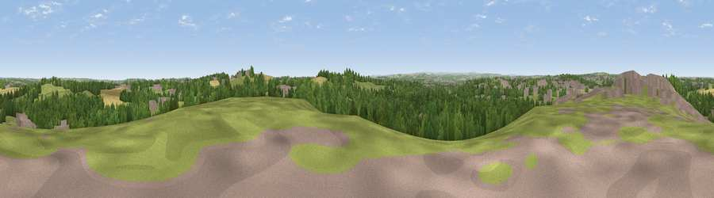

Viewpoint near Kirkthorpe
#21861 in England · top 33% of its area beats it · near KirkthorpeWhere it is
The exact computed spot (SE 36175 21825). Click the marker for map links.
The view, rendered

A 360° render of this exact spot computed from the terrain model, tree cover and land cover — summer colours, afternoon light, calibrated against photographs of famous viewpoints. Real trees, hedges and buildings will differ in detail.
The panorama
Grey silhouette: terrain skyline in each direction (720 bearings, Earth curvature and refraction included). Dashed green: skyline with trees (+15 m) and buildings (+8 m) as obstacles. Blue strip: how far the ground is visible on each bearing.
Where the view opens
Wedge length = distance to the farthest visible ground on that bearing (vegetation-aware). Rings at 10, 25 and 50 km.
What fills the view
45% woodland · 28% grassland · 12% cropland · 12% built-up · 3% water ·
Angular shares of the visible panorama (visual magnitude), not map area. Landscape diversity 0.58 (0–1 Shannon).
Key numbers
More beautiful places nearby
The staircase of upgrades: each row has a higher view potential than everything closer. Driving times are estimates from straight-line distance, calibrated against real road routing — check an actual route before setting out.
| Place | Direction | Drive | Score |
|---|---|---|---|
| Viewpoint near Warmfield | SE · 1 km | ~4 min | 58.3 |
| Prince of Wales Colliery Tip | E · 9 km | ~18 min | 61.4 |
| Viewpoint near Woolley | SSW · 10 km | ~20 min | 66.5 |
| Viewpoint near Woolley | SSW · 11 km | ~20 min | 67.9 |
| Viewpoint near Grange Moor | WSW · 15 km | ~26 min | 69.8 |
| Viewpoint near Hoylandswaine | SSW · 20 km | ~34 min | 71.8 |
| Viewpoint near Hoylandswaine | SSW · 20 km | ~34 min | 72.7 |
| Rawdon Billing | NW · 23 km | ~38 min | 73.0 |
53.69163, -1.45366 · source: screening · position refined by local search. Computed location — check access rights before visiting.